Plateau is a plate reverb module designed to make a dry, lifeless patch sound lush, deep and spacious. However, Plateau attempts to go beyond what most other reverberators offer.
Plateau is based upon the popular Dattorro (1997) digital plate reverb design. The diagram below shows a simplified version of the algorithm.
The audio is initially pre-delayed and equalised before passing through the 'Input Diffuser' to smear and diffuse the signal. In Plateau, there is the option to bypass this. Next, the diffused signal is passed into the 'Reverberation Tank' which is two chains of filters arranged in parrallel. The chains are fed into each other to continously diffuse the signal and build up a dense reverberation. The reverb decays over time thanks to the equalisation and decay stages after each chain. Dattorro (1997) found that an unpleasant resonance and ringing can build up unless the delay times of the all-pass filters are subtly modulated by low frequency oscillators (LFOs). This modulation changes the resonant frequency of the reverberator over-time to supress resonances, as well as change the reflection pattern so that it appears to continously vary. With moderate modulation, this results in an audible pitch shifting.
Dattorro, J. (1997). Effect design part 1: Reverberator and other filters, J. Audio Eng. Soc, 45(9), 660-684.